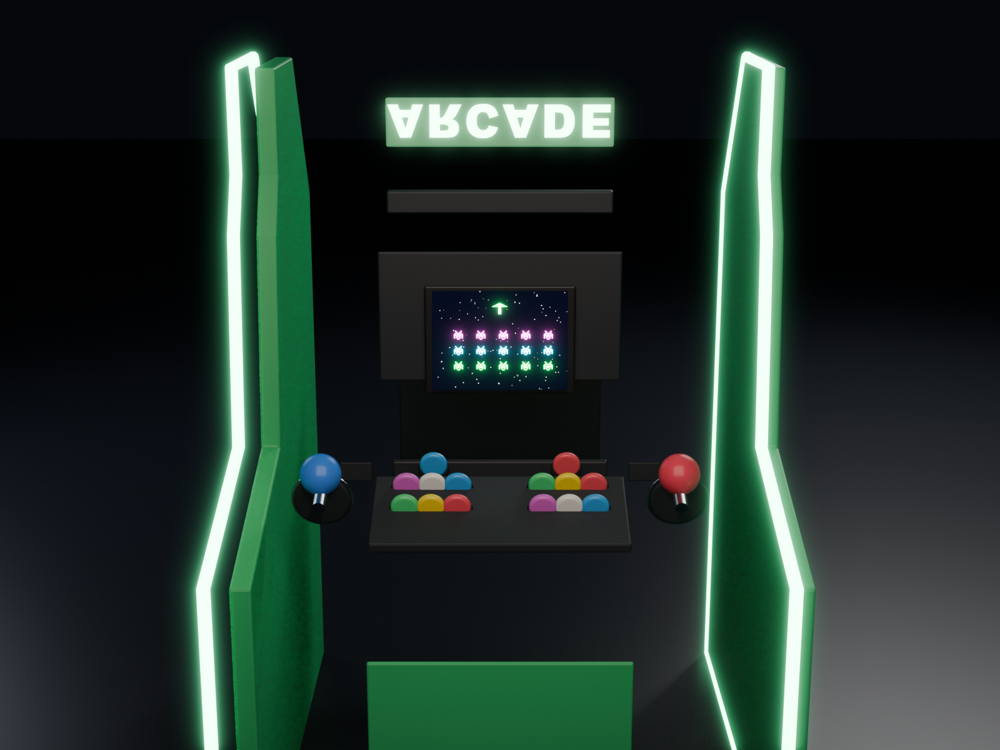
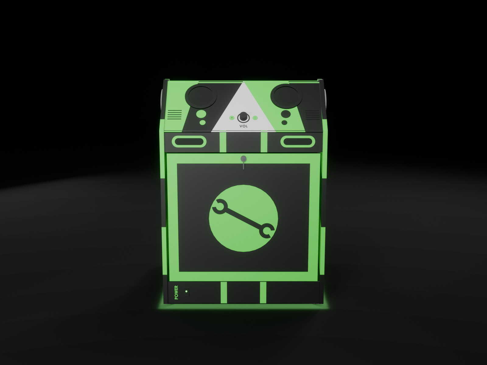

O que você recebe
Tudo pra sair do zero ao "insert coin"
Três ferramentas que trabalham juntas — da impressora até o jogo rodando.
App do emulador
Programa grátis pra Windows: navega em sites de ROM, intercepta o download e envia direto pra sua RetroPie (via SFTP), já na pasta certa do emulador.
Baixar agoraGuia passo a passo
Da impressão à montagem: renders 3D do gabinete, lista de material, as 8 etapas e as dicas de configuração do slicer pra sair perfeito.
Abrir o guiaControle de impressão
Painel pra marcar o que já imprimiu, anotar falhas, horas e comentários por peça — e filtrar por cor (verde/preto). Com 245 peças e 300h+, você não se perde.
Abrir o controleComo funciona
Quatro passos até jogar
Imprima
Baixe os STL já cortados pra caber na Ender 3 e siga a ordem no controle de impressão.
Monte
Cole os painéis pelos pinos de encaixe e parafuse a caixa seguindo as 8 etapas do guia.
Instale o Pi
Coloque a Raspberry Pi com RetroPie e use o app pra adicionar jogos e capas.
Jogue
Ligue, chame um amigo e divirta-se no seu fliperama 2 jogadores feito por você.


Download · grátis
RetroPie ROM Sender
App pra Windows que envia ROMs direto pra sua RetroPie pela rede (SFTP), já na pasta certa do emulador — sem mexer no terminal. Baixe o portable (roda sem instalar) ou o instalador.
Windows 64-bit · sempre a versão mais recente · ver versões
🔓 100% open source · sem rastreio · sem conta · ver o código ou compile você mesmo
Dúvidas
Perguntas frequentes
Preciso de impressora grande?
Não. Todas as peças foram cortadas pra caber numa Ender 3 (mesa 220×220). Elas se encaixam por pinos e se colam depois.
Quanto tempo leva pra imprimir?
São 300h+ de impressão no total. Por isso existe o controle: você marca o progresso, falhas e horas de cada peça sem se perder.
Preciso imprimir colorido?
Não é obrigatório, mas o modelo é bicolor (verde + preto) e fica muito melhor em duas cores. No controle de impressão cada peça mostra a cor certa e dá pra filtrar por cor — você imprime todas de uma cor, troca o filamento e imprime as da outra.
É realmente grátis?
Sim. O guia, o controle e o app são gratuitos. O que você gasta é o filamento e as peças de hardware (tela, botões, Raspberry Pi).
O que o app do emulador faz?
Ele navega em sites de ROM, intercepta o arquivo que você baixa e envia direto pra sua RetroPie por SFTP, colocando na pasta certa do emulador — sem precisar mexer no terminal.